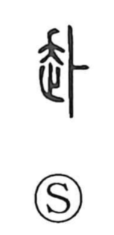

Explanation
A phono-semantic character, 赴 takes its sound from the component 卜 (read boku in Sino-Japanese), which serves as the on-reading cue; the same phonetic appears in characters like 訃 (“death notice”) and 仆 (“to fall”). The Shuowen defines 赴 as hastening toward—going or coming quickly—so it naturally extends to “proceed,” “go,” and “face toward.” In the Zuo Zhuan, 訃告 is the dispatch of a messenger to announce a death, and in bronze inscriptions 告 (“to announce”) refers specifically to that act. Because 訃告 involves conveying news across a distance, 訃 seems to carry within it the sense of “going toward” embodied by 赴. In modern usage, 訃 remains in words like 訃報 (“news of a death”), while 赴 appears vividly in 赴任, the journey to take up a new post.